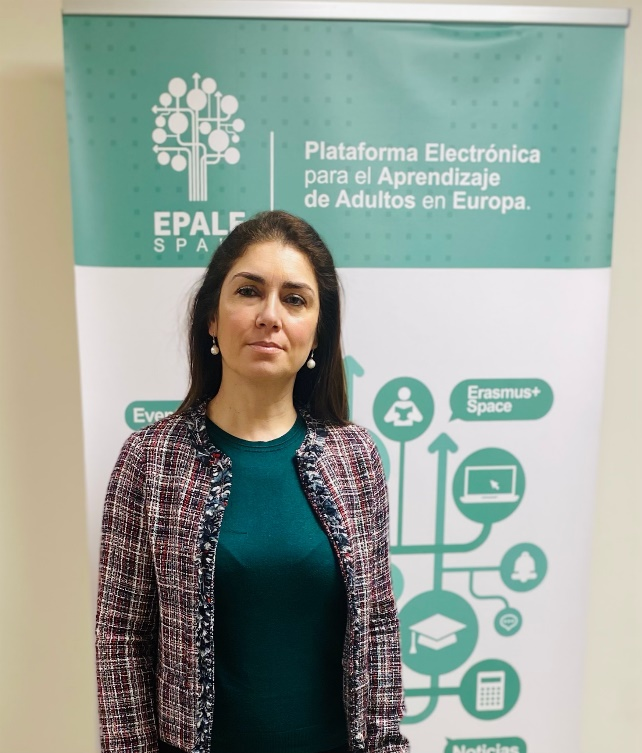

En enero me entrevistó EPALE, la Plataforma Electrónica para el Aprendizaje de Adultos en Europa, una iniciativa europea para promover y mejorar la calidad de la educación de personas adultas. La plataforma ofrece a docentes, responsables políticos e investigadores recursos, oportunidades de desarrollo profesional y un espacio para compartir conocimiento por toda Europa. En la entrevista hablé de mi trabajo con la empresa simulada, orientado a fomentar el bilingüismo y la digitalización en mi alumnado. La comparto aquí, aunque también puedes leerla completa en la plataforma EPALE.
Aprender haciendo
«Lo que tenemos que aprender, lo aprendemos haciendo», afirmaba Aristóteles allá por el siglo IV a. C.
El proyecto SEFED es un programa formativo cuyo objetivo principal es formar al alumnado en el ámbito de la administración y gestión de empresas mediante simulaciones reales en un entorno virtual. Ofrece al alumnado del ciclo de Grado Superior de Administración y Finanzas la oportunidad de completar su formación trabajando en distintos puestos dentro de una empresa simulada: DECASARRE SAS (Sociedad Anónima Simulada), dedicada a la producción y venta de quesos y otros productos de alta calidad de Castilla y León.
Sandra Mangas es licenciada en Administración y Dirección de Empresas y tiene un Grado Superior en Lenguas Aplicadas. Comenzó su carrera profesional en el sector privado y hoy es profesora de Secundaria especializada en administración de empresas. Habla cuatro idiomas y centra su docencia en las nuevas metodologías, el emprendimiento y la educación bilingüe. Desde septiembre de 2022 trabaja como ATD (Asesora Técnico Docente) en el Centro de Apoyo a la Enseñanza, Digitalización, Innovación y Emprendimiento, dependiente de la Dirección General de Formación Profesional y Régimen Especial de la Consejería de Educación de Castilla y León. En años anteriores impartió el ciclo de Grado Superior de Administración de Empresas en el IES Arca Real de Valladolid.
¿Qué ventajas tiene desarrollar los contenidos del ciclo en torno a la empresa simulada?
El entorno virtual nos permite formar al alumnado en procesos, herramientas informáticas, servicios en línea, documentación y sus flujos de trabajo; en definitiva, «aprender haciendo» en un contexto empresarial internacional, trabajando de forma práctica e integrando todos los contenidos del ciclo formativo.
También nos permite trabajar aspectos que no recoge el currículo oficial del ciclo, como métodos innovadores de pago y cobro, la tramitación electrónica, la gestión de redes sociales y las soft skills (resolución de problemas, pensamiento crítico, iniciativa, responsabilidad y habilidades sociales), todas imprescindibles para nuestro alumnado si quiere triunfar en el entorno cambiante de hoy.
¿En qué consiste la metodología SEFED?
La metodología SEFED consiste en una empresa virtual organizada en distintos departamentos. Cada departamento tiene puestos de trabajo definidos, y cada puesto, tareas específicas. Cada empresa desarrolla una actividad e intenta vender sus productos o servicios a las demás empresas de la red SEFED.
¿Cuántas empresas forman la red?
Actualmente la red de empresas simuladas españolas está formada por 700 empresas. La red internacional la componen más de 7.000 empresas en aproximadamente 42 países de todo el mundo.
¿Quién gestiona la red de empresas simuladas españolas?
La organización responsable es la Fundación INFORM, que gestiona el programa SEFED desde 1987. La sede de nuestra empresa, DECASARRE SAS, tiene un centro de producción en el aula 209, que hemos transformado en una oficina administrativa. Gracias a esta empresa simulada mantenemos relaciones comerciales con otras empresas simuladas, nacionales e internacionales, vendiendo nuestros productos y comprando materias primas. Nuestros productos se venden a otras empresas simuladas nacionales y, desde hace un par de años, nos hemos centrado en internacionalizar la empresa y aumentar nuestra presencia internacional.
¿Qué tipo de documentos y canales de comunicación se usan en estas empresas simuladas?
En las relaciones comerciales entre empresas simuladas se usan los mismos documentos y canales de comunicación que usaría una empresa real, y el alumnado ejecuta los procedimientos igual que en un puesto administrativo real. Aprende en un contexto que refleja el entorno laboral internacional y fomenta el trabajo en equipo.
¿Qué operaciones empresariales se cubren en la empresa simulada?
A través de la plataforma virtual reproducimos las operaciones habituales de una empresa: contratación de servicios y suministros, productos bancarios, archivo y tramitación electrónica de documentos con la Seguridad Social, la Agencia Tributaria, el SEPE, aduanas, gestión de transportes y mucho más.
¿En qué medida se aplican al currículo las competencias adquiridas en la plataforma?
En la empresa simulada el alumnado concluye su periodo de formación aplicando todos los conocimientos adquiridos en el resto de módulos del ciclo, con una visión global de las actividades de una oficina administrativa. Adquiere una experiencia práctica comparable a la experiencia laboral real, que facilitará su incorporación al mercado de trabajo.
Lo más destacable es que el alumnado aprende realizando tareas administrativas con las últimas herramientas digitales y en inglés en su día a día. Por ejemplo, a principios del año pasado crearon de forma autónoma una foto 360° y una experiencia de realidad aumentada que permite visitar virtualmente nuestro lugar de trabajo desde cualquier parte del mundo.
¿Qué papel juega el bilingüismo en este proyecto?
Los empleados de DECASARRE aprenden inglés usándolo, lo que hace su aprendizaje significativo, a diferencia de los métodos tradicionales de enseñanza de idiomas. Creemos firmemente que tenemos la oportunidad de marcar la diferencia en la educación de nuestro alumnado con este proyecto de simulación bilingüe: es una verdadera inmersión en la lengua. No hablamos de rellenar huecos en una frase; hablamos de usar un idioma a diario en las tareas habituales de la empresa, por escrito y de forma oral. Tenemos la oportunidad de interactuar en tiempo real con alumnado y empresas simuladas de otros países sin salir del centro y a diario: respondiendo correos de empresas internacionales, gestionando reclamaciones, seleccionando proveedores internacionales para hacer pedidos, importando y haciendo compras intracomunitarias de mercancías, gestionando ventas a clientes internacionales (entregas intracomunitarias y exportaciones) y participando en numerosas ferias virtuales internacionales, gracias al programa empresa-aula. El alumnado también crea y mantiene una web íntegramente en inglés (www.decasarre.com) para aumentar las ventas y las relaciones internacionales. Dentro de la web hemos creado una tienda virtual, que facilita mucho la venta a empresas de otros países. Participamos activamente en distintos eventos internacionales. Por ejemplo, en el curso 2021/2022 ganamos el Social Media Competition de empresas simuladas por tercer año consecutivo (3.er puesto) y fuimos finalistas en el concurso Cedefop PhotoAward con nuestro vídeo sobre nuestro camino hacia la sostenibilidad.
Además de las competencias digitales mencionadas, ¿trabajáis otras prioridades temáticas?
Además de desarrollar las competencias digitales del alumnado, quisimos desarrollar sus competencias verdes, y ¿qué mejor manera que organizar un sistema de archivo compartido en red y lograr el cero papel en nuestra empresa simulada? El alumnado organizó el trabajo de forma autónoma e incluso diseñó su propia app para que los empleados fichasen, evitando las firmas en papel.
Otra ventaja de este proyecto es que, al desarrollarse en un entorno totalmente virtual y digital, permite al alumnado trabajar desde casa en situaciones difíciles, como durante la pandemia. La propuesta de este proyecto permite trabajar desde casa en caso de cuarentena. Esto prepara a nuestro alumnado para otra realidad del mundo empresarial: el teletrabajo. Les estamos dando las herramientas que necesitarán para triunfar en el mercado laboral.
¡Muchas gracias, Sandra, y enhorabuena por tu dedicación y excelente trabajo!
